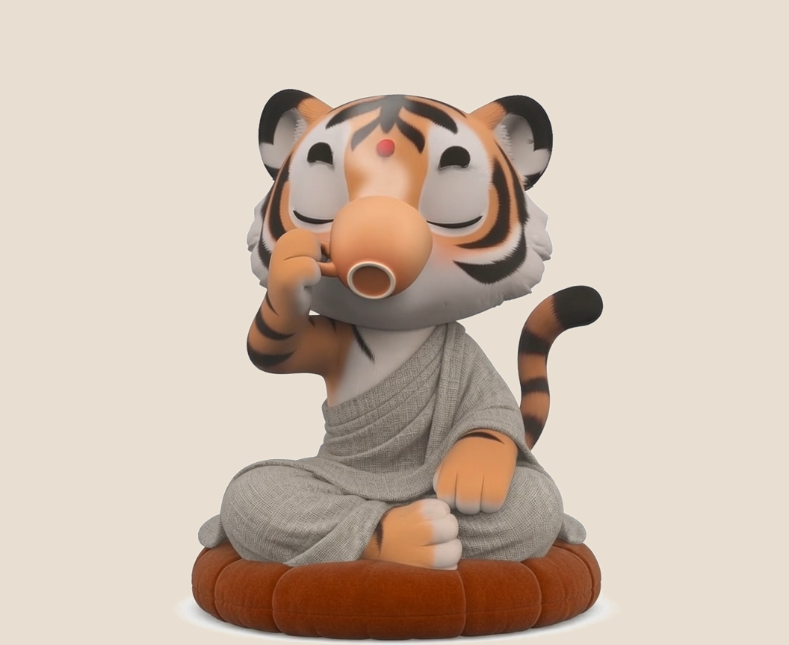
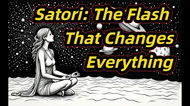
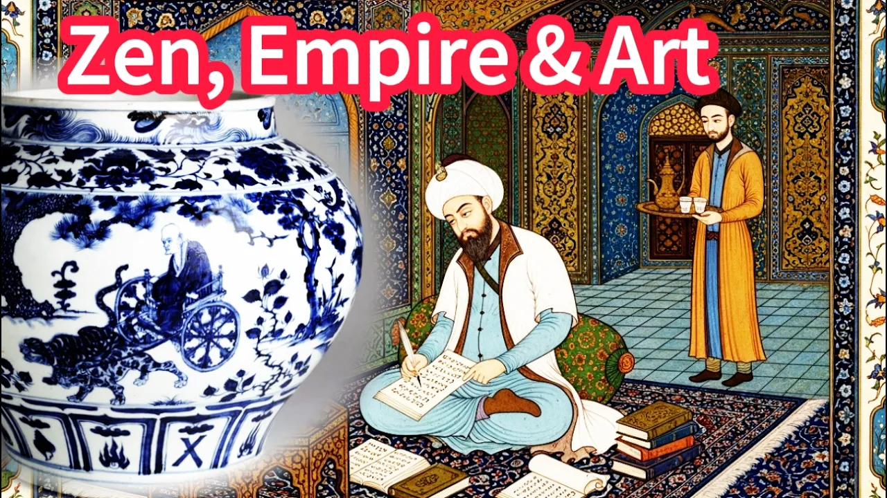
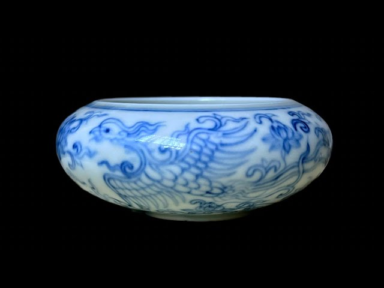
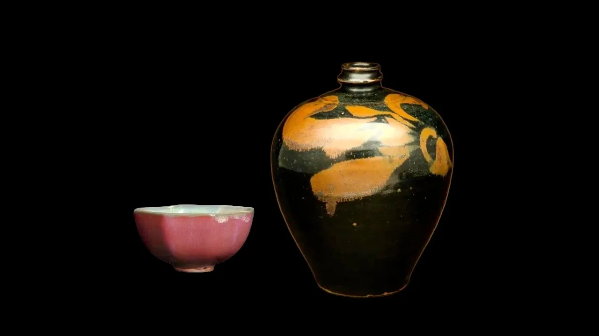

Twinsology
English 日本語
Samatia™
Pronounced sa-MAH-tee-ah
Walking the Yin Way?
with Yin · 阿寅
A calm mindfulness companion that helps you cultivate focus, presence, and the conditions for flow through regular practice, at your own pace.
Wellness isn’t only about the gym. Many people overlook a more foundational practice: training the mind.
A mindfulness partner — not a traditional virtual pet. No streak pressure. No countdown to miss out.
Your practice and what you tell Yin stay on this device.
Inside the practice
-
Gentle companion
No streak pressure. No countdown anxiety. Just a quiet friend by your side.
-

Mindful rituals & ambience
Small rituals and handcrafted soundscapes to help you enter the flow.
-
Quiet Line & collections
Every minute spent in stillness, captured into timeless memory artifacts.
Early Yin Community
A quiet culture laboratory — not a noisy platform. For people who care what Samatia stands for: practice alone, meet others who do the same, at your own pace.
-
Newcomers
Arrive
Find your footing when you first walk in.
-
Journey
Grow
Quiet reflection — not a scoreboard.
-
Focus & Flow
Practice
Explore focus, flow, and what actually helps.
-
Quiet Room
Just be
You do not have to speak, reply, or perform.
-
The Den
Belong
Warmth and casual conversation when you want company.
Opens Slack in a new tab. Shared invite — no pressure to post.
Mindful Theater
Meditation, Ancient Art & Mindful Visuals
A few short visual meditations — a small gift when you have a quiet minute.
-

Satori: The Flash That Changes Everything -
What is Zen? Ancient Wisdom & Guided Meditation -
What is Zen? The "Unfair Advantage" for Peak Performance and Peace



Each poster opens YouTube in a new tab.